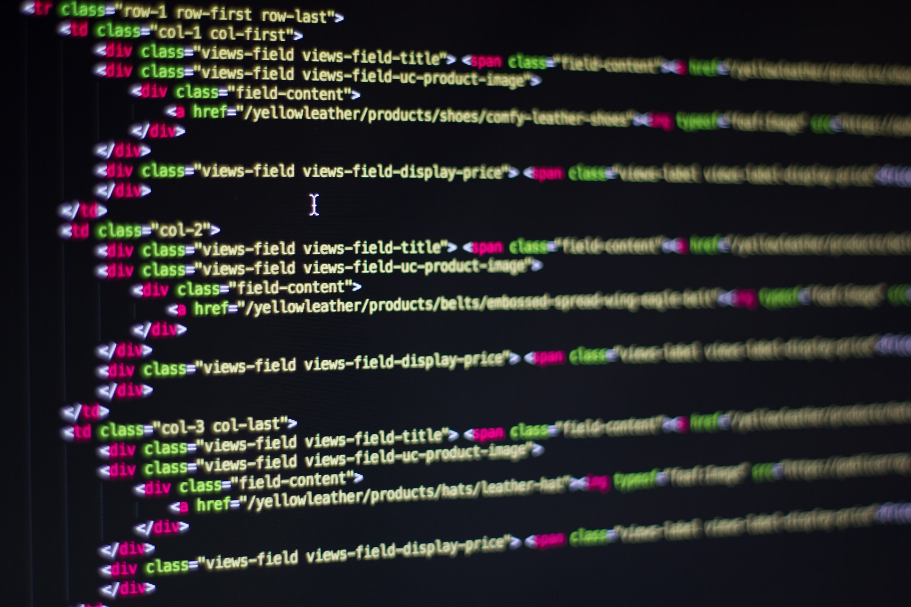

Site-ul este cartea de vizită a oricărei firme. Aici se regăsește conținut original care reprezintă obiectul de activitate al firmei. Avem întotdeauna propuneri moderne, care urmează trend-urile în design. În același timp, ținem cont și de faptul că acesta trebuie să fie cât mai accesibil și ușor de utilizat pentru toți potențialii clienți. Site-urile realizate de noi funcționează perfect pe orice dispozitiv, acestea adaptându-și designul și structura în funcție de caz.
